OCIでは、OCI Load Balancerに直接デプロイするWAF、”WAFポリシー”と、お客様のアプリケーションのドメインに構築するWAF、”エッジポリシー”の2種類のWAFを提供しています。 本チュートリアルでは、OCIのLoad Balancerに直接デプロイする”WAFポリシー”を作成し、実際のWAFの動作を確認します。
所要時間 : 約1時間
前提条件 :
- 「応用編 - ロードバランサーでWebサーバーを負荷分散する」を参考に、WebサーバーおよびOCIのロードバランサ―が構成されていること
注意 : ※チュートリアル内の画面ショットについてはOracle Cloud Infrastructureの現在のコンソール画面と異なっている場合があります。
1. IAMポリシーの作成
Web Application Firewallを使用するためには、操作を実行するユーザーに以下のポリシーが付与されている必要があります。
allow group <IAMグループ名> to manage waas-family in tenancy/compartment <コンパートメント名>
allow group <IAMグループ名> to manage web-app-firewall in tenancy/compartment <コンパートメント名>
allow group <IAMグループ名> to manage waf-policy in tenancy/compartment <コンパートメント名>
allow group <IAMグループ名> to manage waf-network-address-list in tenancy/compartment <コンパートメント名>
IAMポリシーの詳細についてはドキュメントをご参照ください。
2. WAFポリシーの作成
2-1. 基本情報の入力
OCIコンソールのメニュー→アイデンティティとセキュリティ→Webアプリケーション・ファイアウォール→ポリシー→「WAFポリシーの作成」ボタンをクリックします。
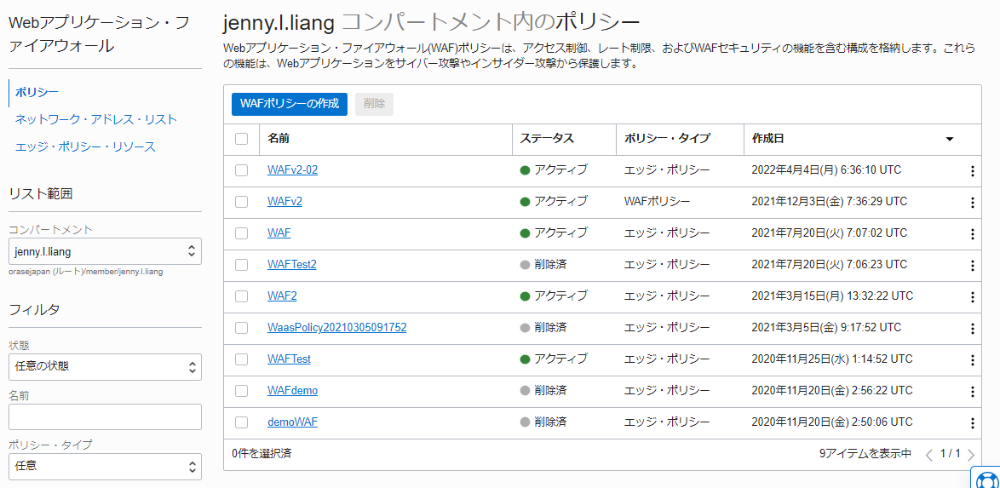
表示された「基本情報」の画面にて、以下情報を入力します。
- 名前 - 任意
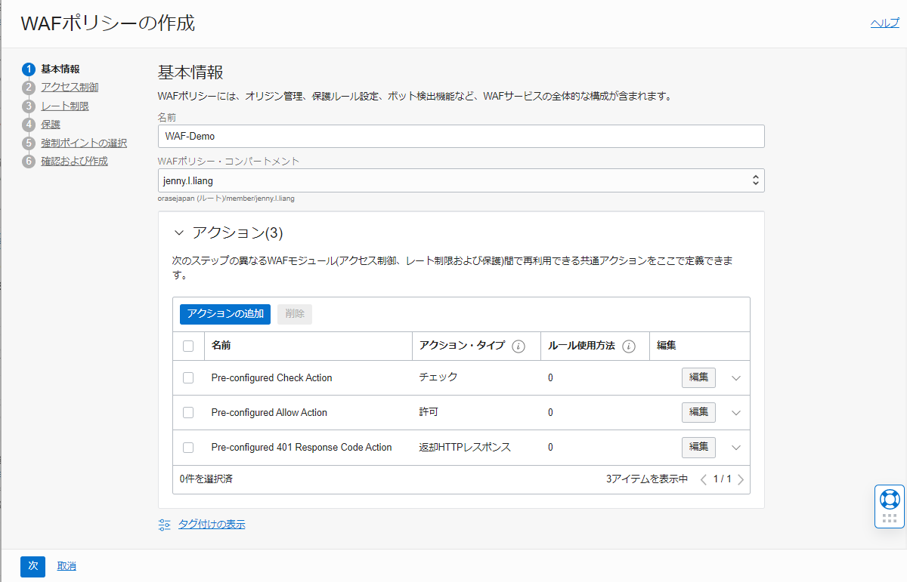
アクションには、デフォルトで定義された3種類のアクションが表示されます。
- Pre-configured Check Action - アクセスはブロックしないが、ルールが検知されたことをログに記録
- Pre-configured Allow Action - ルールに一致した場合に、残りのルールをスキップし、アクセスを許可する
- Pre-configured 401 Response Code Action - ルールに一致した場合に、401コードを返却する
事前定義されたアクションの他に、ユーザーがカスタムでアクションを作成することも可能です。 本チュートリアルではデフォルトで定義されたアクションをそのまま使うので、「次」ボタンをクリックします。
2-2. アクセス制御の作成
アクセス制御の画面にて、「アクセス制御の有効化」ボタンにチェックを入れます。 アクセス制御では、日本からのアクセスを許可し、日本以外の国からのアクセスには401コードを返却するようにルールを作成します。
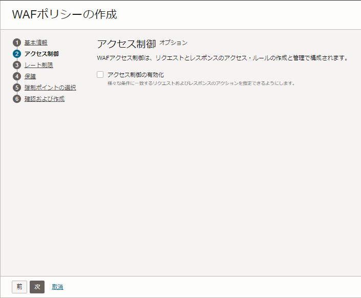
「アクセス・ルールの追加」ボタンをクリックし、以下を入力します。
- 名前 - 任意 例）access-rule1
- Condition type - Country/Region
- Operator - Not in list
- Countries - Japan
- アクション名 - Pre-configured 401 Response Code Action
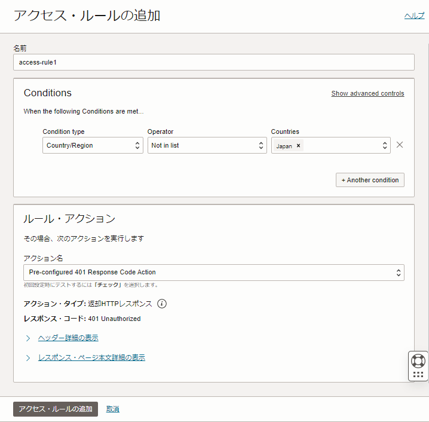
アクセス・ルールの追加画面下の「アクセス・ルールの追加」ボタンをクリックし、「次」ボタンをクリックします。
2-3. レート制御の作成
レート制限の画面にて、「レート制限ルールの構成の有効化」ボタンにチェックを入れます。
レート制限では、一定の期間内に、同一のIPアドレスから特定の回数以上アクセスがあった場合に指定したアクションを実行することが可能です。
本チュートリアルでは、1秒以内に同一のIPアドレスから100回以上アクセスがあった場合に、401コードを返却するようにルールを作成します。 レート制限はサーバーに一度に大量のアクセスを送り付けることでサーバーをダウンさせるようなDDoS攻撃などの対策に活用することができます。
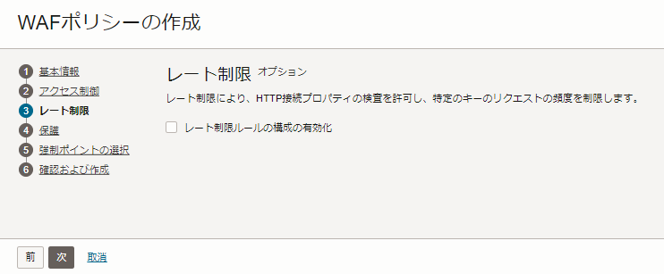
「レート制限ルールの追加」ボタンをクリックし、以下を入力します。
- 名前 - 任意 例）Rate-Rule1
- Conditions（optional） - 空欄
- リクエスト制限 - 100
- 期間（秒） - 1
- アクション名 - Pre-configured 401 Response Code Action
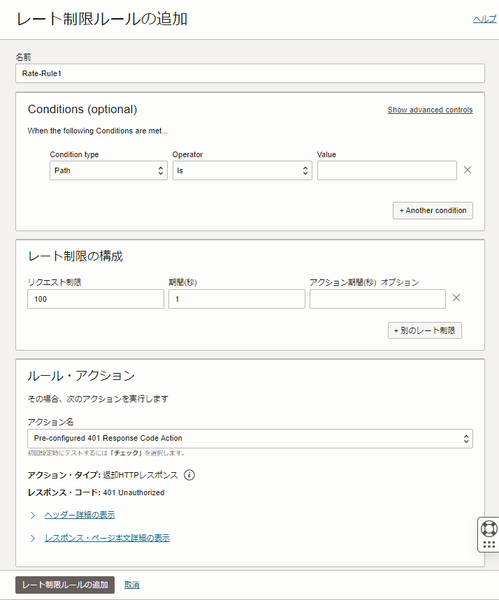
レート制限ルールの追加画面下の「レート制限ルールの追加」ボタンをクリックし、「次」ボタンをクリックします。
2-4. 保護ルールの有効化
保護の画面にて、「保護ルールの構成の有効化」ボタンをクリックします。 保護ルールではOWASP Top10などに分類されるようなWebアプリケーションへの代表的な攻撃、脅威を検知するルールを提供しています。
本チュートリアルでは、リモートコード実行を検知する保護ルールを有効化し、リモートコード実行が検知された場合に401コードを返却するように設定をします。
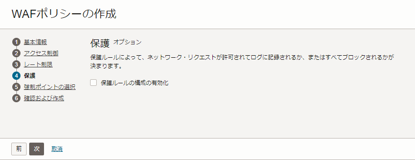
「リクエスト保護ルールの追加」ボタンをクリックし、以下を入力します。
- 名前 - 任意 例）Protection-Rule1
- Conditions（optional） - 空欄
- アクション名 - Pre-configured 401 Response Code Action
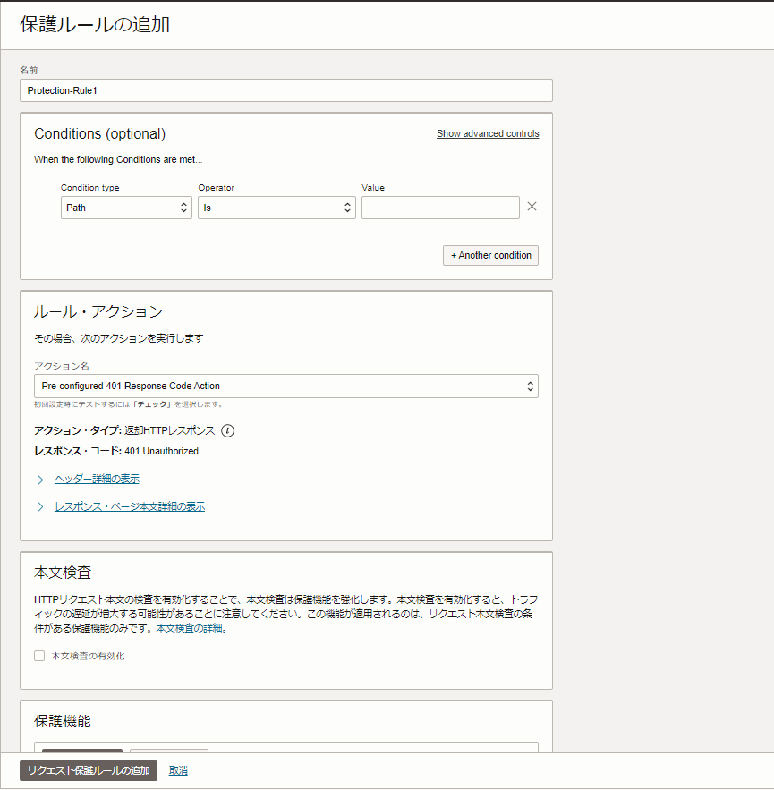
「保護機能の選択」ボタンをクリックし、保護ルールを選択します。 本チュートリアルでは、リモートコード実行攻撃を検知する保護ルールを有効化します。
タグによるフィルタで選択されている「Recommended」のタグを削除し、「Remote Code Execution」のタグを選択します。 表示された保護ルールを全て選択し、「保護機能の選択」ボタンをクリックします。
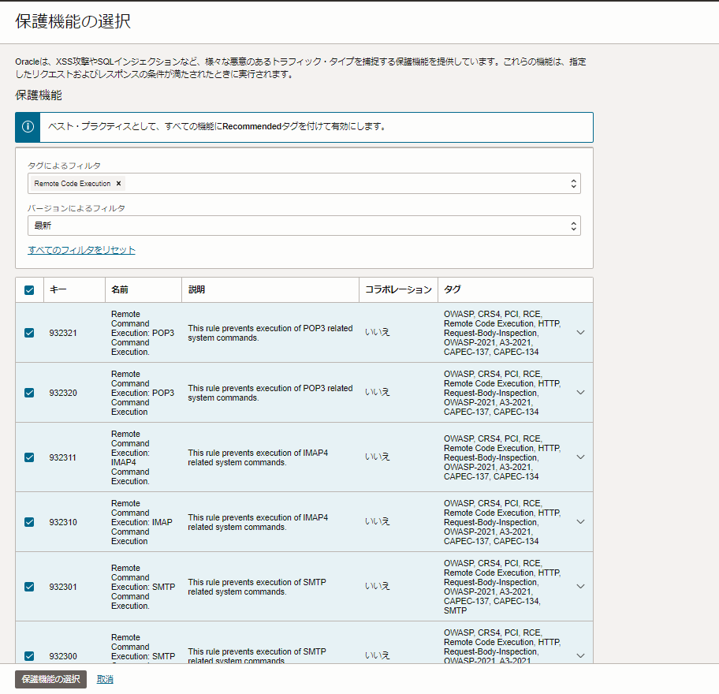
保護ルールの追加画面下の「リクエスト保護ルールの追加」ボタンをクリックし、「次」ボタンをクリックします。
2-5. 強制ポイントの選択
強制ポイントの画面にて、事前準備で予め作成、構成していたファイアウォールを選択し、「次」ボタンをクリックします。
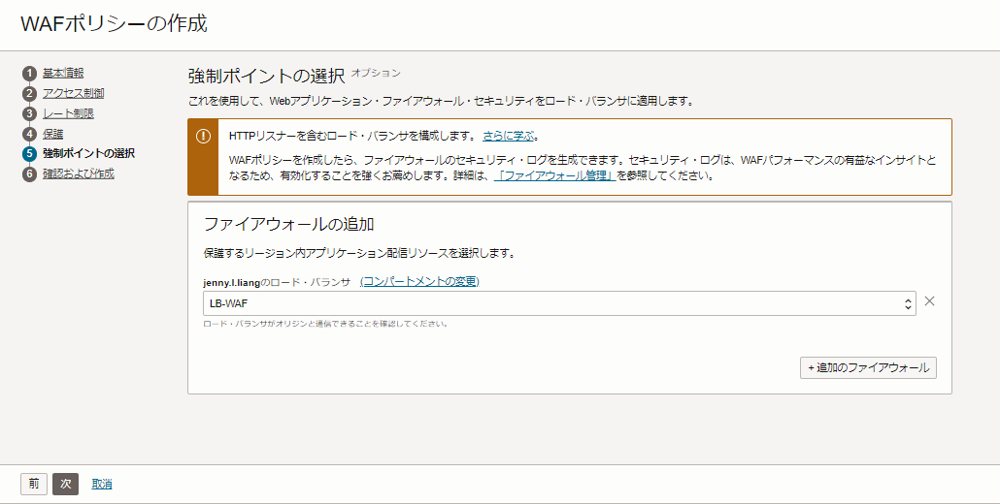
2-6. 確認および作成
確認および作成画面で、「WAFポリシーの作成」ボタンをクリックします。
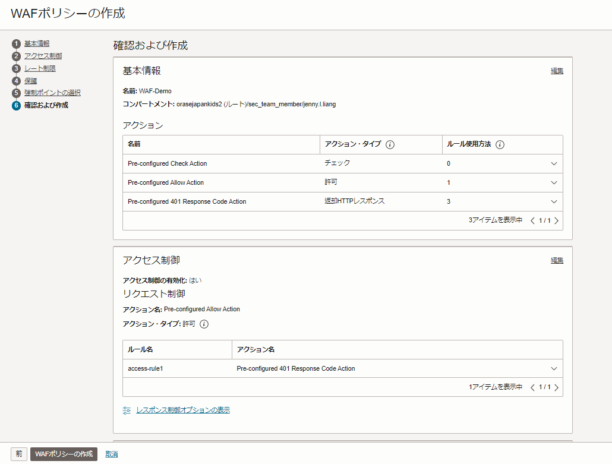
作成が完了したことを確認し、「閉じる」ボタンをクリックします。 作成したWAFインスタンスがアクティブになっていることを確認します。
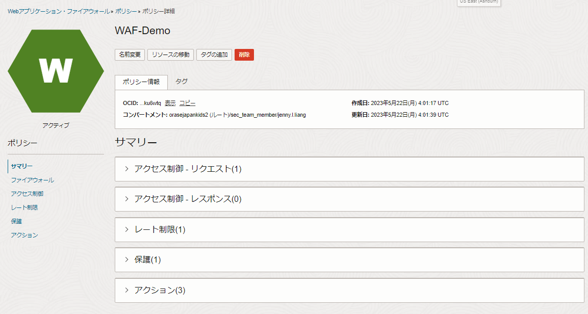
以上の手順で、WAFの構成は終了です。 OCIのLoad Balancerを通過するトラフィックは全て一度WAFによって検査されるようになります。
3. ログの有効化
WAFを通過したトラフィックの情報、WAFのアクティビティを確認するためにWAFのログを有効化します。 作成したWAFインスタンスの「ファイアウォール」のタブを開き、ファイアウォール名の青文字部分をクリックします。
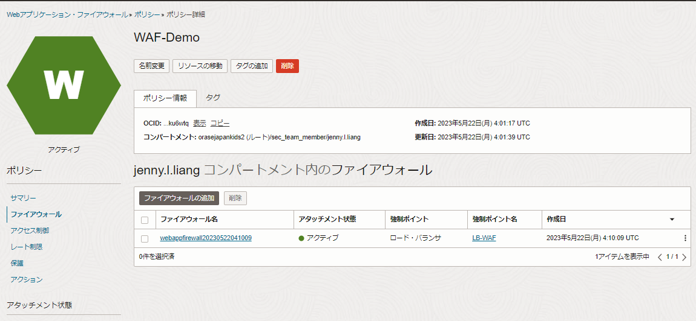
ファイアウォールの詳細画面の「ログ」のタブを開き、「ログの有効化」の列の「無効」となっている部分をクリックします。
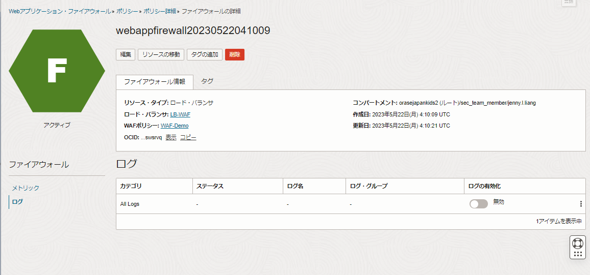
表示さたログの有効化画面で以下を選択し、「ログの有効化」ボタンをクリックします。
- コンパートメント - 任意
- ログ・グループ - 任意（Default_Groupがデフォルトで作成されているログ・グループです。それ以外を指定したい場合は、「新規グループの作成」から新しくログ・グループを作成してください）
- ログ名 - 任意
- ログの保持 - 任意（最大6ヵ月まで保持することができます）
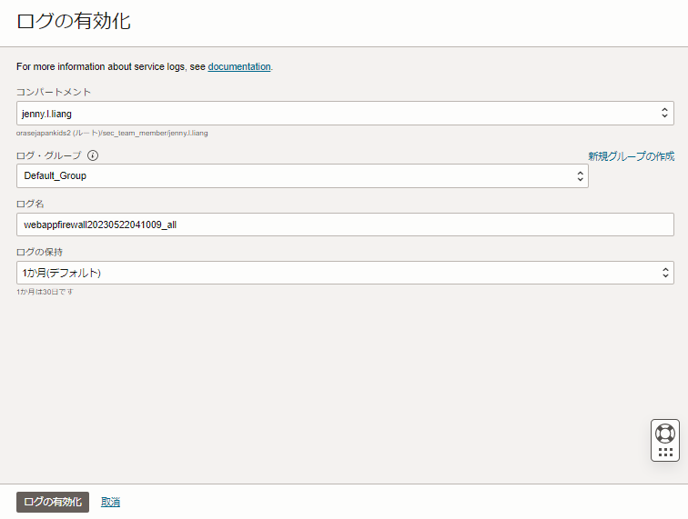
以上の手順で、ログの有効化は完了です。 ログは数十秒ほどでアクティブになります。
4. WAFの動作確認
WAFポリシーをアタッチしたOCI Flexible Load BalancerのパブリックIPアドレスにブラウザからアクセスします。
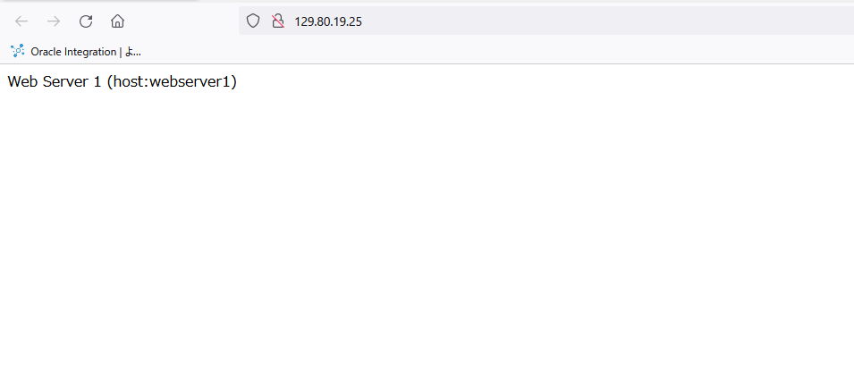
手順3で有効化したWAFのログから、WAFへのアクセスログが出力されていることを確認します。
ファイアウォールの詳細画面の「ログ」のタブから、「ログ名」の青文字部分をクリックすると、Loggingサービスのコンソールに遷移します。 必要に応じて「時間によるフィルタ」から、選択されている時間枠を変更し、ご自身が使用している端末のグローバルIPアドレスからのアクセスが出力されていることを確認します。
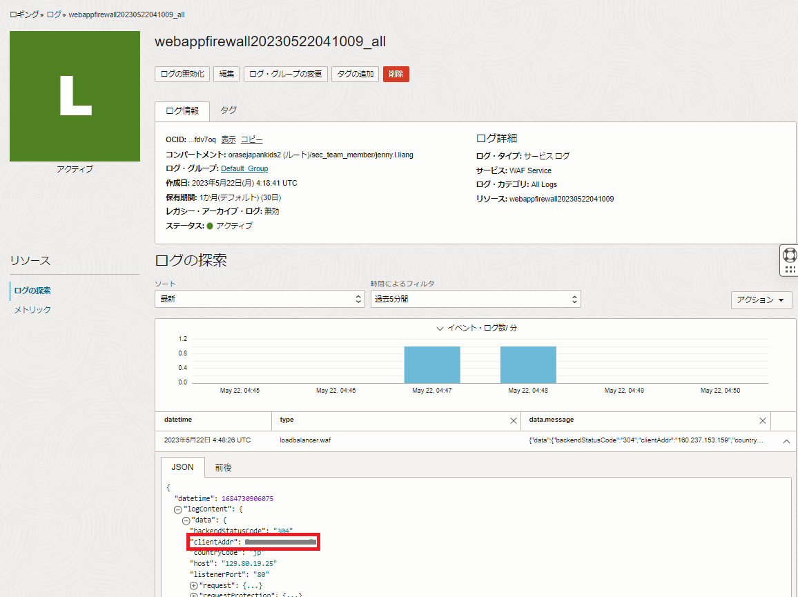
4-1. アクセス・ルールの動作確認
アクセス・ルールでは、日本以外からの国からのアクセスをブロックするように設定をしました。 動作検証では、ブラウザのプラグインを使用してブラウザのIPアドレスを日本以外のものに変更し、APサーバーにアクセスします。
本チュートリアルの例では、FirefoxのanonymoXを使用して、IPアドレスを変更します。 Chromeの拡張機能「VPN Free - Betternet Unlimited VPN Proxy」などを使用することも可能です。
ブラウザのプラグインを追加し、有効化したら再度Load BalancerのIPアドレスにアクセスします。 そうすると、ブラウザに「Unauthorized」のメッセージが表示されていることを確認できます。
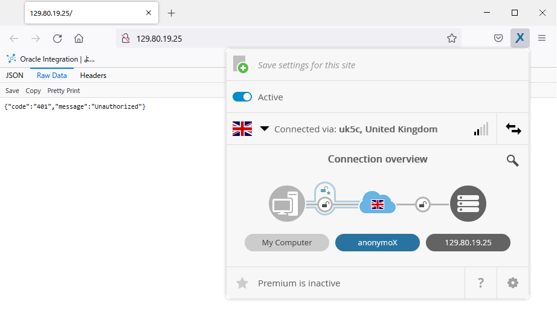
続いて、WAFのログを確認します。 ログの中に、日本以外の国からのアクセスが、アクセス・ルール「access-rule1」によって検知され、401コードが返却されている内容のログが出力されていることを確認できます。
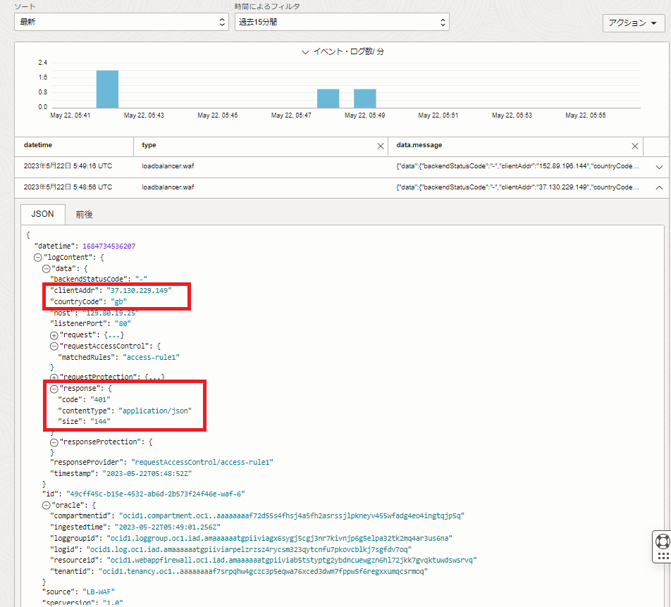
以上の手順で、WAFが日本以外の国からのアクセスを検知し、ブロックしていることを確認できました。
4-2. レート制限の動作確認
続いてレート制限の動作を確認していきます。 レート制限では、1秒間に同一のIPアドレスから100回以上のアクセスがあった場合にアクセスをブロックするように設定をしました。 実際の攻撃は、攻撃スクリプトを用いて実行します。
手元のPCで以下コマンドを実行し、Github上の攻撃スクリプトをローカルPCにダウンロードします。 OCIコンソールのCloud Shellからも同様にコマンドを実行することができます。
git clone https://github.com/mmarukaw/oci-waf-handson.git
ダウンロードしたoci-waf-handsonファイルのattack-scriptsのディレクトリ内に、攻撃スクリプトとconfigファイルが含まれています。
$ ls oci-waf-handson/attack-scripts
01-php-code-injection-rule-950002.sh
02-credic-card-leakage-in-request-protection-rule-981078.sh
03-Classis-SQL-injection-probing-protection-rule-942000.sh
04-SQL-Keyword-Anomaly-Scoring-protection-rule-981317.sh
05-Internet-Explorer-XSS-Filters-protection-rule-981173.sh
06-Layer7-DDoS-Distributed-Denial-of-Service-Apache-Benchmark.sh
config
readme.md
configファイルを開き、修正します。
$vi config
# WAF secured host
# 講師の指示に従って、ホスト名を変更してください。
WAFSecuredHost=<Flexible Load BalancerのIPアドレス>
# Path for vulnerability test
VulnerabilityPath=/
# Language
Language=JA
configファイルを修正したら、攻撃スクリプトを実行します。 今回実行するのは「06-Layer7-DDoS-Distributed-Denial-of-Service-Apache-Benchmark.sh」です。 本スクリプトは、サーバーに大量のリクエストを送り付けることでサーバーをダウンさせるDDoS攻撃を想定した攻撃スクリプトになります。
$./06-Layer7-DDoS-Distributed-Denial-of-Service-Apache-Benchmark.sh
攻撃スクリプトを実行したら、WAFのログを確認します。 ログが1000件出力されていること、そして中に手順2-3で作成したレート制限ルールによって401コードが返却されているログが出力されていることを確認できます
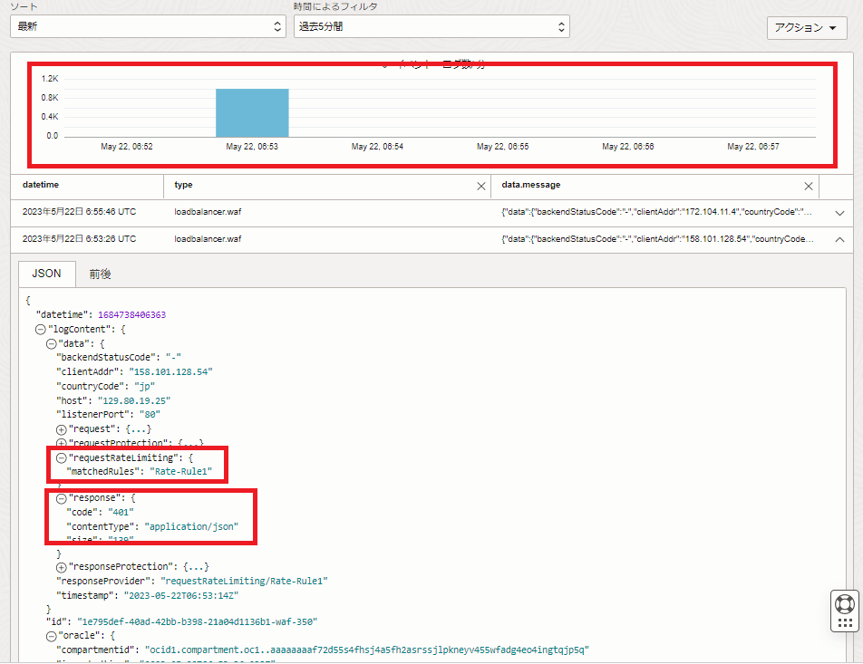
以上でレート制限の動作確認は終了です。
4-3. 保護ルールの動作確認
最後に、保護ルールの動作を確認します。 手順2-4では、リモートコード実行を検知する保護ルールを有効化しました。 実際にクライアントPCでターミナルを開き、以下コマンドで、リモートコード実行攻撃を実行します。
$ curl –A “() { :;};echo Content-type text/plain;echo:/bin/cat/etc/passwd” http://<Flexible Load BalancerのIPアドレス>
コマンドを実行すると、「Unauthorized」というメッセージが返却されることを確認します。
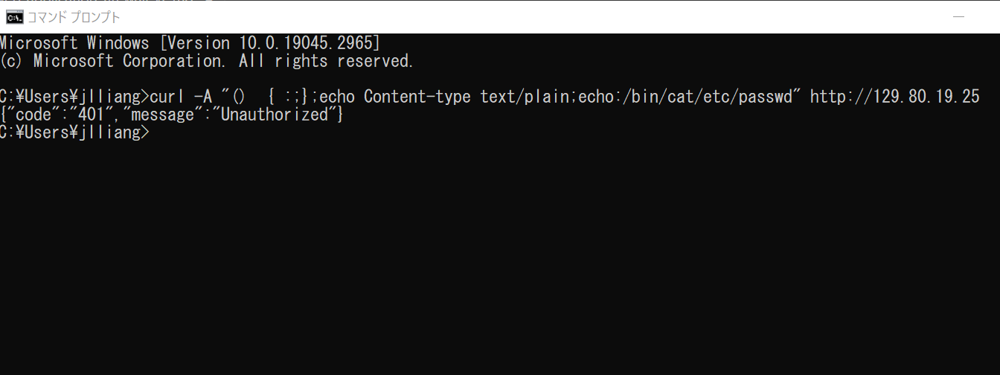
また、WAFのログを確認すると、手順2-4で有効化した保護ルールによって攻撃が検知され、401コードが返却されていることを確認できます。
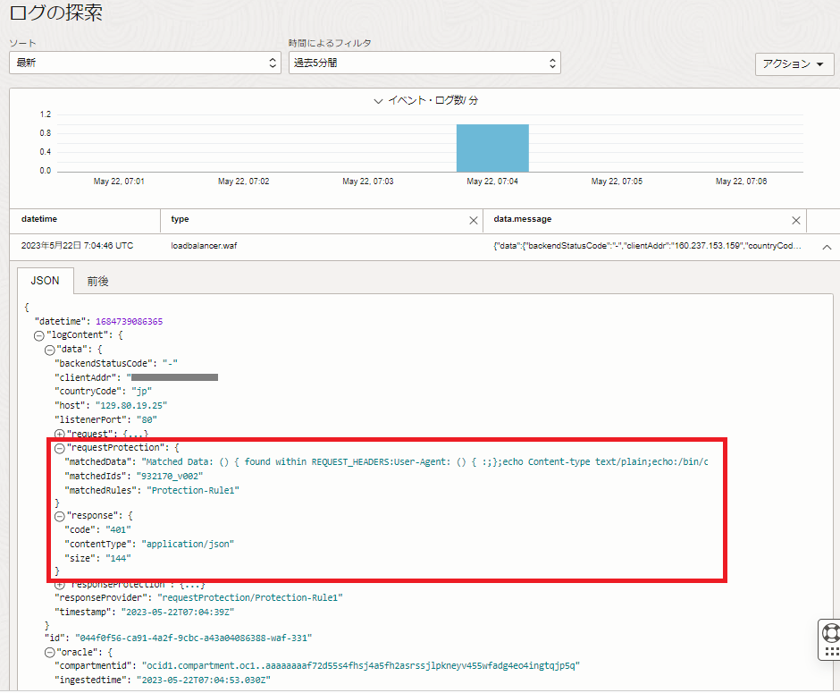
以上で保護ルールの動作確認は終了です。
WAFのログはService Connector Hubを使用してLogging Analyticsに転送することで、より高度に可視化・分析することも可能です。
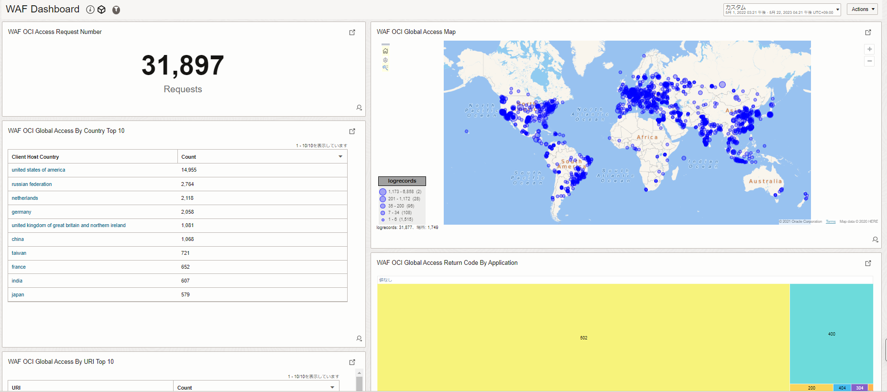
Logging AnalyticsによるWAFログの分析についてはオラクルエンジニア通信 - Logging AnalyticsによるOCI Web Application Firewall（WAF）のモニタリングをご参照ください。